Tamburello
Tamburello ist eine Rückschlagsportart, die mit einem Tamburin-artigen Schläger gespielt wird.
Der Schläger ist dabei deutlich härter bespannt als ein Tennis- oder Badmintonschläger und hat keinen "Stiel" sondern wird direkt am Rahmen gegriffen.
Es gibt verschiedene Varianten dieser Sportart, die sich hinsichtlich des genutzten Spielballes, des Spielfeldes und der Spielregeln unterscheiden.
Ursprünglich kommt Tamburello aus Italien und ist dort auch deutlich stärker verbreitet als in Deutschland.
Als Tambourelli wird die Variante bezeichnet, bei der als Ball ein Federball genutzt wird. Es handelt sich um eine sehr schnelles und daher bewegungsintensives Spiel,
da der Ball über sehr kurze Distanzen gespielt wird. Die Feldmaße sind 4,10m x 9,45m bei einer Netzhöhe von 1,75m. Gespielt wird entweder eins gegen eins,
oder im Doppel/Mixed zwei gegen zwei.
Die Spielregeln sind den Badmintonregeln sehr ähnlich: Beim Aufschlag steht der Spieler mit einem Fuß hinter oder auf der Grundlinie; der Schläger muss beim
Aufschlag unterhalb der Schulterhöhe bleiben. Während der Aufschlag beim Doppel diagonal ausgeführt wird, gibt es diese Beschränkung beim Einzel nicht.
Der Spieler muss den Ball über das Netz in die gegnerische Spielhälfte schlagen, wobei der Ball das Netz nicht berühren darf.
Der Ball wird vom Gegner auf dem direkten Weg ins gegnerische Feld zurückgeschlagen. Zuspiele im Team sind nicht erlaubt.
Der Ball ist aus, wenn er die äußere Kante der Seitenaus- bzw. Grundlinie nicht mehr berührt. Der Spieler darf nicht mit dem Schläger über das Netz greifen.
Ein Satz ist beendet, wenn der erste Spieler einundzwanzig Punkte erreicht hat. Nach jeweils fünf gespielten Punkte wechselt das Aufschlagsrecht.
Jeder Fehler führt direkt zu einem Punktgewinn des Gegners.
Training
Wir spielen jeden Dienstag von 18:00-19:30 in Laurensberg.
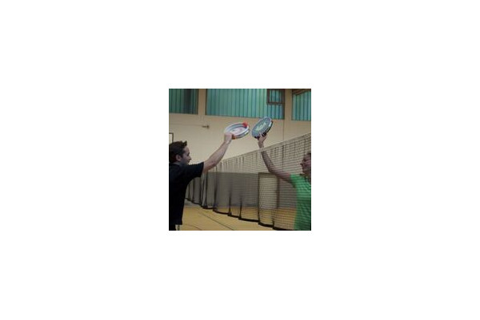
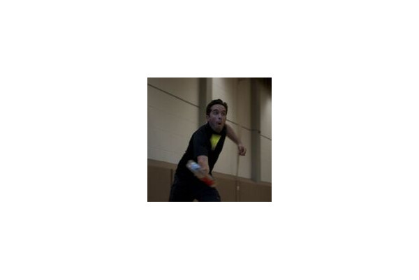
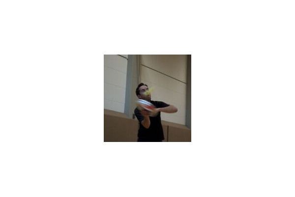
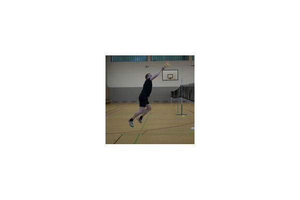
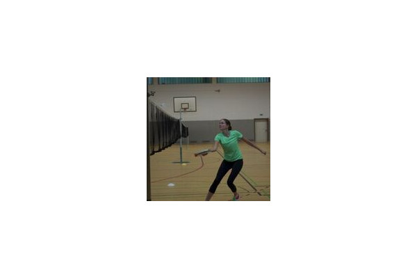
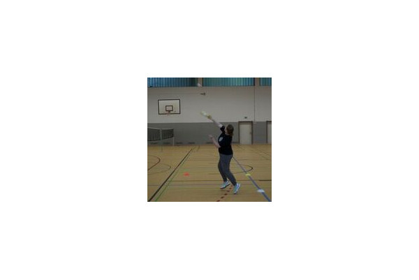
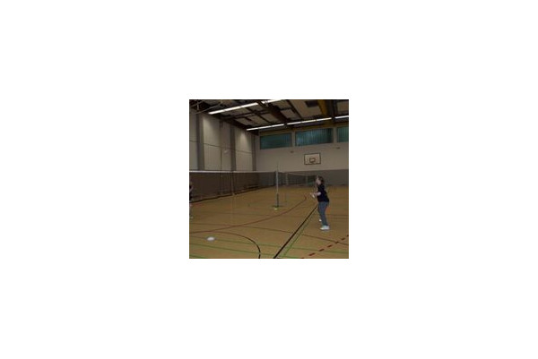
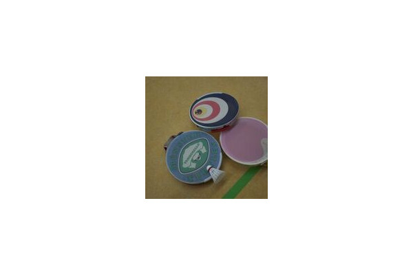
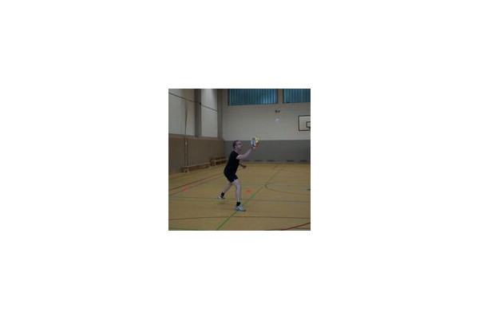
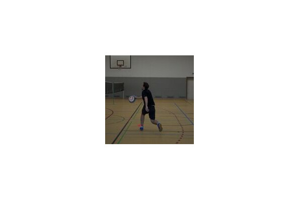
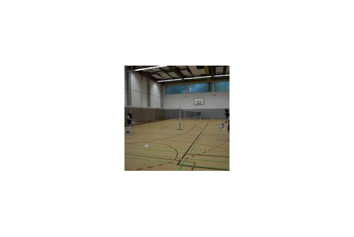
Taumburello bei BV Aachen